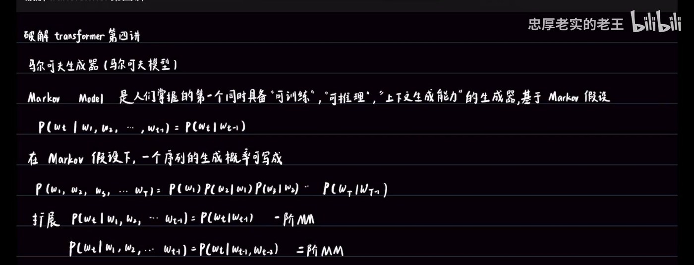
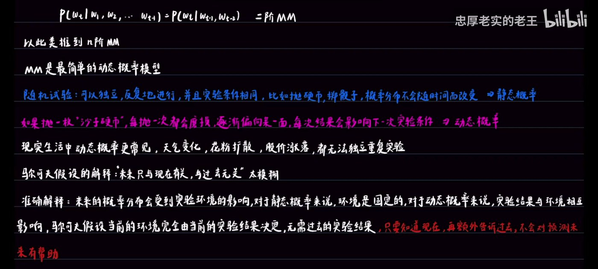
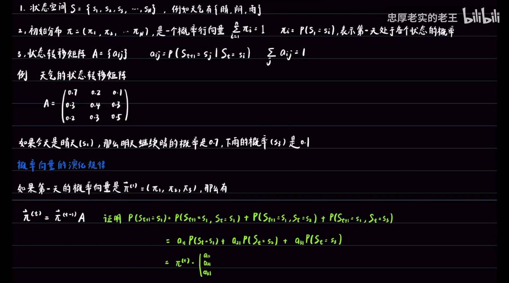
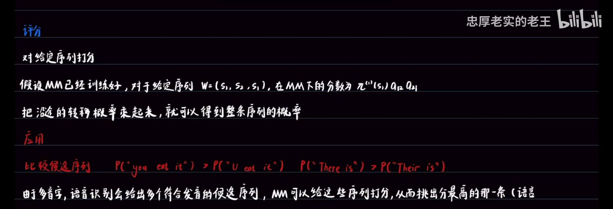
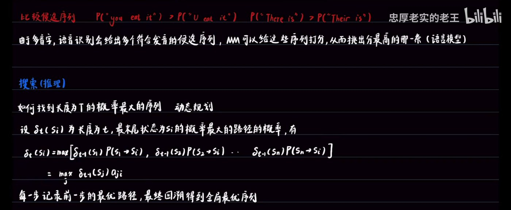
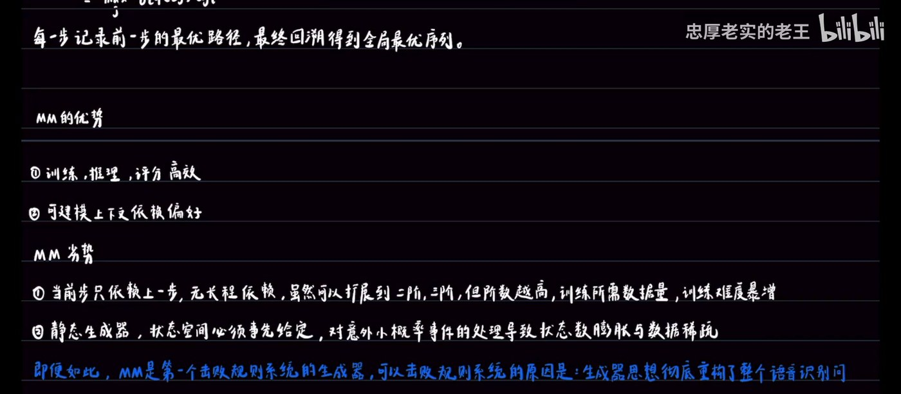
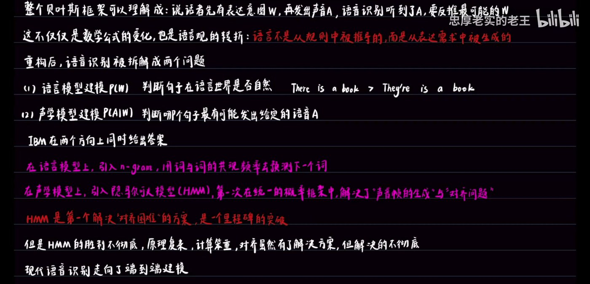

第一个能训练、能推理的生成器 —— 以及语音识别问题的贝叶斯重构
第一个真正能落地的生成器，以及它为什么能击败规则系统
建议先看视频，或对照下方笔记跳读
▶ 播放器无法加载时，可在 B 站直接观看。
第一个同时具备「可训练、可推理、上下文生成能力」的生成器
板书开篇即给出定位：Markov Model 是人们掌握的第一个同时具备「可训练」「可推理」「上下文生成能力」的生成器。
它建立在一个假设之上 —— Markov 假设：
P(w_t | w_1, w_2, …, w_{t-1}) = P(w_t | w_{t-1})
当前词的概率只依赖前一个词，与更早的历史无关。
在这个假设下，整条序列的生成概率可以写成连乘形式：
P(w_1, w_2, w_3, …, w_T) = P(w_1)·P(w_2|w_1)·P(w_3|w_2)·…·P(w_T|w_{T-1})
这个假设还可以扩展 —— 依赖更多的历史：
| 依赖范围 | 公式 | 名称 |
|---|---|---|
| 只依赖前 1 个 | P(w_t | w_{t-1}) | 一阶 MM |
| 依赖前 2 个 | P(w_t | w_{t-1}, w_{t-2}) | 二阶 MM |
| 依赖前 n 个 | P(w_t | w_{t-1}, …, w_{t-n}) | n 阶 MM |
板书给 MM 一个精炼的定位：MM 是最简单的动态概率模型。

为什么现实世界需要「动态」的模型
要理解 MM 为什么是「动态概率模型」，先看两种实验的差别：
随机试验可以独立、反复地进行，并且实验条件相同 —— 比如抛硬币、掷骰子。
概率分布不会随时间而改变。
如果抛一枚「沙子硬币」，每抛一次都会磨损，逐渐偏向某一面 —— 每次结果都会影响下一次实验条件。
概率分布随实验进程演化。
那么「Markov 假设」到底在说什么？板书先给了一个通俗但不准确的说法，再给出精确版本：

一个初始分布 + 一个转移矩阵，就能刻画系统演化
一个离散的、状态有限的 MM 由三个部分组成：
S = {s_1, s_2, s_3, …, s_N}，例如天气有 {晴, 阴, 雨}。
π = (π_1, π_2, …, π_N) 是一个概率行向量，Σπ_i = 1；π_i = P(S_1 = s_i)，表示第一天处于各个状态的概率。
A = {a_ij}，其中 a_ij = P(S_{t+1} = s_j | S_t = s_i)，每行之和为 1：Σ_j a_ij = 1。
以天气为例，状态转移矩阵长这样：
⎡ 0.7 0.2 0.1 ⎤
A = ⎢ 0.3 0.4 0.3 ⎥
⎣ 0.2 0.3 0.5 ⎦
如果今天是晴天（s₁），那么明天继续晴的概率是 0.7，下雨的概率是 0.1。
如果第一天的概率向量是 π^(1) = (π_1, π_2, π_3)，那么有：
π^(t+1) = π^(t) · A
证明思路（以第 1 个状态为例）：
P(S_{t+1}=s₁) = P(S_{t+1}=s₁, S_t=s₁) + P(S_{t+1}=s₁, S_t=s₂) + P(S_{t+1}=s₁, S_t=s₃)
= a₁₁·P(S_t=s₁) + a₂₁·P(S_t=s₂) + a₃₁·P(S_t=s₃)
= π^(t) · (a₁₁, a₂₁, a₃₁)ᵀ

可训练、可推理、能打分的完整闭环
MM 的训练非常简单。假设有许多真实训练数据，统计到：晴→雨 20 次、晴→晴 30 次、晴→阴 10 次，那么：
P(晴|晴) = 30/60 P(雨|晴) = 20/60 P(阴|晴) = 10/60
同样的方法可以估计初始状态分布 π^(1)。
假设 MM 已经训练好，对于给定序列 W = (s_1, s_2, s_3)，在 MM 下的分数就是：
π^(1)(s_1) · a_12 · a_23
把沿途的转移概率乘起来，就可以得到整条序列的概率。
这就是语言模型的雏形 —— 由于多音字，语音识别会给出多个符合发音的候选序列，MM 可以给这些序列打分，从而挑出分最高的那一条：
P("you eat it") > P("U eat it")P("There is") > P("Their is")

怎么找到长度为 T 的概率最大的序列？答案是动态规划。
设 δ_t(s_i) 为「长度为 t、最末状态为 s_i 的概率最大的路径」的概率，有递推式：
δ_t(s_i) = max[ δ_{t-1}(s₁)·P(s₁→s_i), δ_{t-1}(s₂)·P(s₂→s_i), …, δ_{t-1}(s_N)·P(s_N→s_i) ]
= max_j δ_{t-1}(s_j) · a_ji
每一步记录前一步的最优路径，最终回溯得到全局最优序列。

为什么它只是「中庸之器」，而不是终点

换一个角度，把「不可能」拆成两个「可能」
统计语言学把语音识别建模成：给定语音 A，寻找句子 W，使 P(W=w_i | A=A_i) 概率最大。
但直接学习 P(W|A) 会立刻遇到困难：
语音与文字长度完全不同，边界模糊且不唯一。一句话可以快说、可以慢说，可以口齿不清 —— 词与音的对齐关系非常复杂。
更棘手的是：一个字占多少帧声音？快说、慢说是否改变边界？连读、省略如何处理？
例如 their、there、they're 发音相同，如果无上下文，无从判断。
IBM 的做法是换个角度，先解决部分问题 —— 用贝叶斯公式：
P(W|A) = P(A|W)·P(W) / P(A)
当给定语音 A_i 时，P(A=A_i) 是不随 W 的变化而变化的常数。所以：
P(W|A) ∝ P(A|W)·P(W)
那么 P(W) 和 P(A) 到底是什么？板书的回答很有哲学味：
它们是世界偏好的客观反应，是某种客观存在。当给定语音 A_i 时，P(A=A_i) 是一个客观的偏好，不随 W 的变化而变化。
两个问题各自对应一个模型
把 P(W|A) ∝ P(A|W)·P(W) 拆开，两项各自有明确的含义：
如果句子是 W，那么它生成声音 A 的可能性有多大？
这是「意图」→「声音」的生成判断，体现了语言的生成过程。
句子 W 本身在语言世界里是否自然、常见？它刻画了语言使用的生成偏好。
重构之后，语音识别被拆解成两个可以分别攻克的问题：
| 问题 | 内容 | 例子 / 方案 |
|---|---|---|
| (1) 语言模型建模 P(W) | 判断句子在语言世界是否自然 | There is a book > They're is a book |
| (2) 声学模型建模 P(A|W) | 判断哪个句子最有可能发出给定的语音 A | 引入隐马尔可夫模型（HMM） |
IBM 在两个方向上同时给出了答案：

从「一个可用的生成器」到「一个被重构的问题」
本讲全部结论，可独立使用
| 问题 | 结论 |
|---|---|
| MM 的历史地位？ | 第一个同时具备「可训练」「可推理」「上下文生成能力」的生成器 |
| Markov 假设是什么？ | P(w_t | w_1…w_{t-1}) = P(w_t | w_{t-1})，当前词只依赖前一个词 |
| 序列生成概率怎么写？ | 连乘：P(w_1)·P(w_2|w_1)·P(w_3|w_2)·…·P(w_T|w_{T-1}) |
| 一阶 / 二阶 / n 阶 MM？ | 分别依赖前 1 个 / 前 2 个 / 前 n 个历史词 |
| 静态概率与动态概率的差别？ | 静态：可独立反复、条件相同、分布不随时间变；动态：结果会影响下次实验条件 |
| Markov 假设的准确含义？ | 当前环境完全由当前实验结果决定，过去的实验结果对预测未来没有额外帮助 |
| MM 的三要素？ | ① 状态空间 S ② 初始分布 π ③ 状态转移矩阵 A |
| 转移矩阵元素满足什么？ | a_ij = P(S_{t+1}=s_j | S_t=s_i)，每行之和为 1 |
| 核心演化公式？ | π^(t+1) = π^(t)·A |
| MM 怎么训练？ | 统计频数估计转移概率，本质是极大似然估计法 |
| MM 怎么评分？ | 把沿途的转移概率乘起来，即 π^(1)(s_1)·a_12·a_23·… |
| MM 打分有什么用？ | 给多音字产生的候选序列打分，挑出分最高的 —— 即语言模型 |
| MM 怎么搜索最优序列？ | 动态规划：δ_t(s_i) = max_j δ_{t-1}(s_j)·a_ji，记录并回溯 |
| MM 的优势？ | ① 训练/推理/评分高效 ② 可建模上下文依赖 |
| MM 的劣势？ | ① 无长程依赖，阶数越高训练数据量与难度暴增 ② 静态生成器，状态空间需事先给定，易状态膨胀与数据稀疏 |
| MM 为什么能击败规则系统？ | 生成器思想彻底重构了整个语音识别问题本身 |
| 直接建模 P(W|A) 的两个困难？ | ① 对齐困难（长度不同、边界模糊、快慢/连读/省略）② 多音字（their / there / they're） |
| 贝叶斯分解？ | P(W|A) = P(A|W)P(W)/P(A) ∝ P(A|W)P(W) |
| P(A|W) 是什么？ | 声学模型：意图 → 声音的生成判断 |
| P(W) 是什么？ | 语言模型：句子在语言世界是否自然、常见 |
| 贝叶斯框架的直觉？ | 说话者先有意图 W，再发出声音 A；识别是听到 A 反推最可能的 W |
| 语言观上的转折？ | 语言不是从规则中被推导的，而是从表达需求中被生成的 |
| 重构后的两条技术路线？ | 语言模型用 n-gram；声学模型用 HMM |
| HMM 的意义与局限？ | 第一个解决「对齐困难」的方案，里程碑突破；但胜利不彻底，原理复杂、计算笨重 |
| 下一讲讲什么？ | 先讲 n-gram 语言模型，再讲 HMM |
本讲出现的关键概念
| 术语 | 说明 |
|---|---|
| 马尔可夫模型 (MM) | Markov Model。第一个同时具备可训练、可推理、上下文生成能力的生成器，也是最简单的动态概率模型。 |
| Markov 假设 | P(w_t | w_1…w_{t-1}) = P(w_t | w_{t-1})。当前状态只依赖前一个状态；准确含义是当前环境完全由当前实验结果决定。 |
| n 阶 MM | 依赖前 n 个历史的马尔可夫模型。一阶依赖前 1 个，二阶依赖前 2 个，依此类推。 |
| 静态概率 | 随机试验可独立反复进行、实验条件相同、概率分布不随时间改变（如抛硬币、掷骰子）。 |
| 动态概率 | 实验结果会影响下一次实验条件，概率分布随进程演化（如「沙子硬币」）。现实世界更常见。 |
| 状态空间 S | MM 三要素之一。S = {s_1, …, s_N}，系统所有可能状态的集合。 |
| 初始分布 π | MM 三要素之一。概率行向量，π_i = P(S_1 = s_i)，表示初始时刻处于各状态的概率。 |
| 状态转移矩阵 A | MM 三要素之一。a_ij = P(S_{t+1}=s_j | S_t=s_i)，每行之和为 1，描述状态间如何演化。 |
| 概率向量演化 | π^(t+1) = π^(t)·A。一个初始状态加一个转移矩阵，就能刻画整个系统演化。 |
| 极大似然估计 | MM 训练方法的本质：用统计频数（如 晴→雨 20 次 / 共 60 次）直接估计转移概率。 |
| 序列评分 | 把沿途的转移概率乘起来得到整条序列的概率，用于给候选序列打分排序。 |
| 动态规划 / 维特比搜索 | 求概率最大序列的方法：δ_t(s_i) = max_j δ_{t-1}(s_j)·a_ji，每步记录最优前驱，最终回溯得到全局最优序列。 |
| 对齐困难 | 语音识别直接建模 P(W|A) 的核心障碍：语音与文字长度不同、边界模糊不唯一，快说慢说、连读省略都会改变对齐关系。 |
| 多音字 | 另一困境：their / there / they're 发音相同，没有上下文无从判断该识别成哪个词。 |
| 贝叶斯分解 | P(W|A) = P(A|W)P(W)/P(A) ∝ P(A|W)P(W)。把「同时解决识别与对齐」的难题拆成两个可分别攻克的子问题。 |
| 语言模型 P(W) | 刻画句子在语言世界里是否自然、常见，即「语言使用的生成偏好」。 |
| 声学模型 P(A|W) | 给定句子 W，它生成声音 A 的可能性。「意图 → 声音」的生成判断。 |
| n-gram | 语言模型侧的技术路线：用词与词的共现频率去预测下一个词（下一讲主题）。 |
| 隐马尔可夫模型 (HMM) | 声学模型侧的技术路线：第一次在统一概率框架中解决「声音帧的生成」与「对齐问题」，是里程碑突破，但胜利不彻底。 |
| 端到端建模 | 现代语音识别的走向：不再把问题拆成语言模型与声学模型两段，而是整体建模。 |
当前是第 4 讲